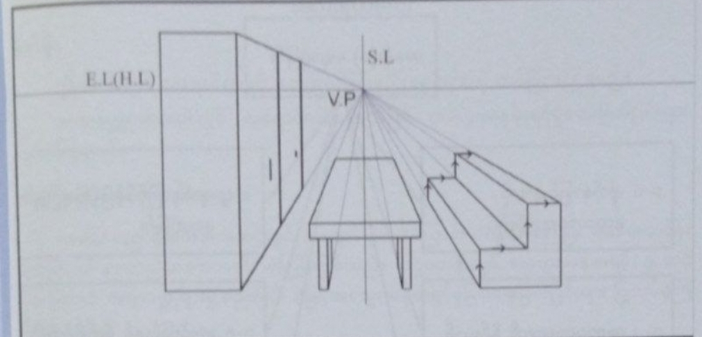

← သင်ခန်းစာများသို့ ပြန်သွားရန်
သင်ခန်းစာ
နီးဝေးမြင်ပုံမှန်စနစ်ဖြင့်ရေးဆွဲခြင်း

နီးဝေးမြင်ပုံမှန်စနစ်ဆိုသည်မှာအရာဝတ္ထုများကိုနီးလျှင်ကြီးပြီးဝေးလျှင်သေး၍မြင်ရသည့်သဘောအတိုင်းရေးဆွဲခြင်းကိုဆိုလိုသည်။
မှတ်သားရန်
ပျောက်ကွယ်စက်တစ်စက်ပါနီးဝေးမြင်ပုံမှန်စနစ်ကိုအသုံးပြုပြီးအရာဝတ္ထုများကိုရေးဆွဲရသည်။
လေ့ကျင့်ခန်း
မျက်နှာပြင်များကိုလေ့လာရေးဆွဲခြင်း
မေးခွန်းတစ်ခုစီအတွက် အဖြေမှန်တစ်ခုကို ရွေးပါ။